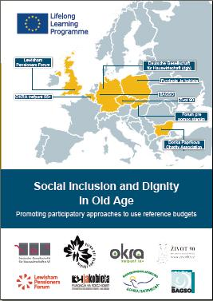
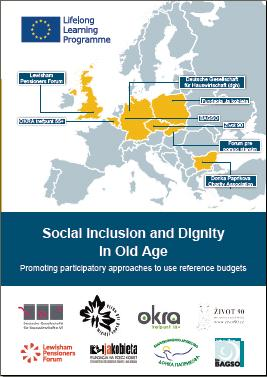

Campaigning for pensioners in Lewisham
Registered Charity No:1158175
Registered Charity No:1158175
Contact us at:
The Old Town Hall
Catford Road
London SE6 4RU
Tel. 020 8690 7869
The Old Town Hall
Catford Road
London SE6 4RU
Tel. 020 8690 7869
|
|
@ | lpforum |

Bridgit Sam-Bailey Chair of Lewisham Pensioners Forum
Lifelong Learning EU Project
 

Here is some of what do we do:
| Bi-monthly forum meetings: |
Talks or films to spark debate and Q&A - on current issues
|
| Newsletters: |
Keeping our members informed of local matters and national issues
|
| A special collaboration: |
The older people's lewisham directory-packed with information
|
| Campaigning in the Community: |
Being part of a visible and active presence on crucial local issues, giving out leaflets and collecting signitures to current petetions
|
| Community / social Events: |
Six monthly fundraising book sales, the knit 'n' knatter group and an annual volunteers' party
|
| Annual pensioners Day: |
With lunch, stalls, speakers, and entertainment
|
| Getting to grips with technology: |
Local schemes and "techy-teas" in central London venues
|
| National Lobbying: |
Going to the National Pensioners Convention in Blackpool and up to Westminister
|
The Monday project has moved to a new location:
St Mauritius House,
65-67 Lewisham Park,
London
SE13 6QX
Every Monday 10.30am - 3pm
St Mauritius House,
65-67 Lewisham Park,
London
SE13 6QX
Every Monday 10.30am - 3pm